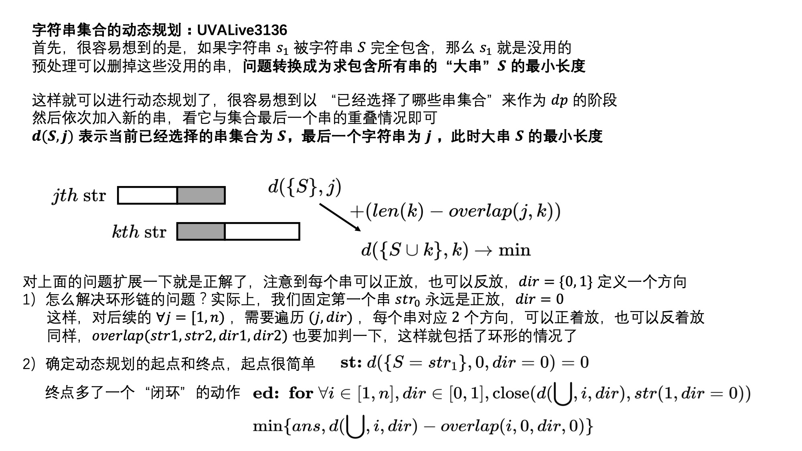
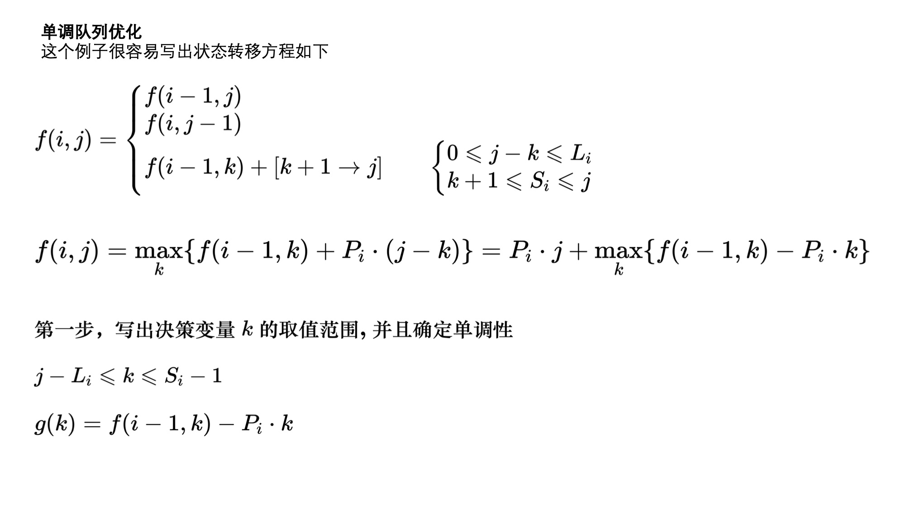
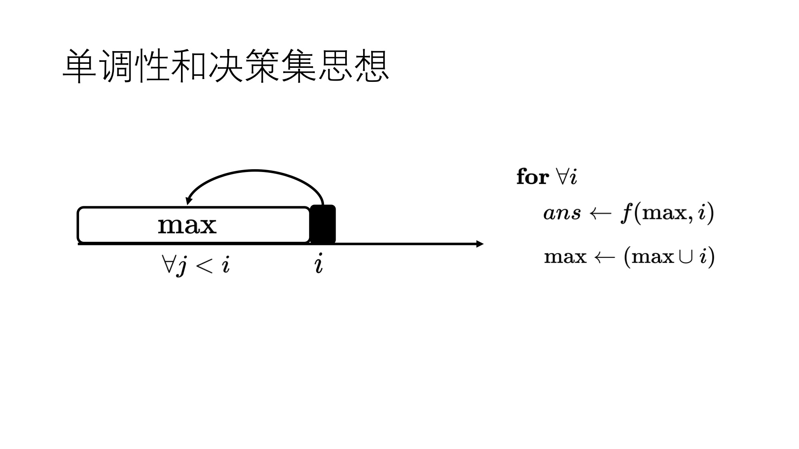
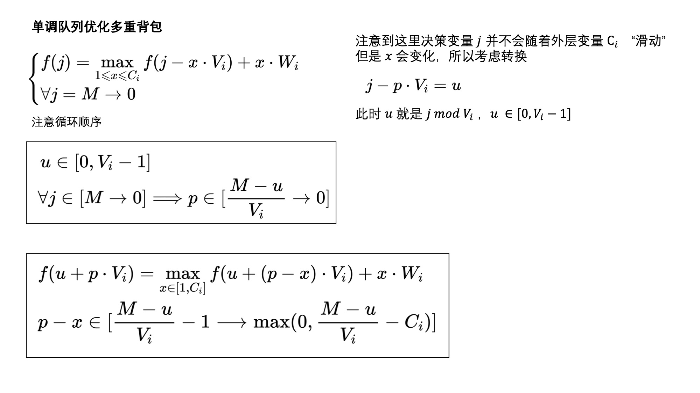

这篇博文继续对动态规划的应用做一些探讨
杂乱的dp
HDU2929
algorithm \textbf{algorithm} algorithm 可以用火柴作为 dp 的阶段，用余数作为状态集合 d ( i , j ) d(i, j) d ( i , j ) 表示用 i i i m m m j j j 所能够摆出的最大正整数
d ( i , j ) ( + k ) → u p d a t e d ( i + m p [ k ] , ( 10 j + k ) m o d m ) d(i, j) \quad (+k) \xrightarrow{update} d(i+mp[k], (10j+k )\bmod m)
d ( i , j ) ( + k ) u p d a t e d ( i + m p [ k ] , ( 1 0 j + k ) m o d m )
start: d ( 0 , 0 ) = 0 \textbf{start:} \ d(0,0) = 0 start: d ( 0 , 0 ) = 0 end: for ∀ i ∈ [ 0 , n ] , max d ( i , 0 ) \textbf{end:} \ \textbf{for} \ \forall i \in [0, n] , \max d(i, 0) end: for ∀ i ∈ [ 0 , n ] , max d ( i , 0 )
1 2 3 4 5 6 7 8 9 10 11 12 13 14 15 16 17 18 19 20 21 22 23 24 25 26 27 28 29 30 31 32 33 34 35 36 37 38 39 40 41 42 43 44 45 46 47 48 49 50 51 52 53 54 55 56 57 58 59 60 61 62 63 64 65 66 67 68 69 70 71 const int maxn = 100 + 10; const int maxm = 3000 + 10; const int maxl = 60; // 10 const int mp[] = {6, 2, 5, 5, 4, 5, 6, 3, 7, 6}; int n, m; char d[maxn][maxm + 1][maxl], ans[maxl]; inline int scmp(const char* a, const char* b) { if (strlen(a) > strlen(b)) return 1; else if (strlen(a) < strlen(b)) return -1; return strcmp(a, b); } void work(char *a, const char *b, int k) { char s[maxl]; strcpy(s, b); int len = strlen(s); if (len == 1 && s[len-1] == '0' ) { s[len-1] = '0' + k; s[len] = 0; } else { s[len] = '0' + k; s[len+1] = 0; } if (scmp(a, s) < 0) strcpy(a, s); } void initdp memset(d, 0, sizeof(d)); d[0][0][0] = '0' ; } void dp _rep(i, 0, n) { _for(j, 0, maxm) if (strlen(d[i][j]) > 0) { _for(k, 0, 10) work(d[ i+mp[k] ][(j*10 + k) % m], d[i][j], k); } } } void init memset(ans, 0, sizeof(ans)); } int main freopen("input.txt" , "r" , stdin); int kase = 0; while (scanf("%d%d" , &n, &m) == 2 && n) { init(); printf ("Case %d: " , ++kase); // then solve the problem initdp(); dp(); for (int i = n; i > 0; i--) if (scmp(ans, d[i][0]) < 0) strcpy(ans, d[i][0]); //debug(ans); if (ans[0] == 0) printf ("-1\n" ); else puts(ans); } }
字符串集合动态规划
LA3136

1 2 3 4 5 6 7 8 9 10 11 12 13 14 15 16 17 18 19 20 21 22 23 24 25 26 27 28 29 30 31 32 33 34 35 36 37 38 39 40 41 42 43 44 45 46 47 48 49 50 51 52 53 54 55 56 57 58 59 60 61 62 63 64 65 66 67 68 69 70 71 72 73 74 75 76 77 78 79 80 81 82 83 84 85 86 87 88 89 90 91 92 93 94 95 96 97 98 99 100 101 102 103 104 105 106 107 108 109 110 111 112 113 114 115 116 117 118 119 120 121 122 123 124 125 126 127 128 129 130 131 132 133 134 135 136 137 138 139 140 141 142 143 144 template <class T> inline bool chmin(T& a, T b) { if (a < 0 || b < a) { a = b; return true ; } return false ; } // ============================== // const int maxn = 16; const int maxl = 200 + 10; const int inf = 0x3f3f3f3f; int n; class A { public: string s, rev; void _init rev = s; reverse(rev.begin(), rev.end()); } bool operator< (const A& rhs) const { return s.length() < rhs.s.length(); } } a[maxn]; string str[maxn][2]; void prework sort(a, a + n); int n2 = 0; _for(i, 0, n) { bool need = true ; _for(j, i + 1, n) { if (a[j].s.find(a[i].s) != string::npos || a[j].rev.find(a[i].s) != string::npos) { need = false ; break ; } } if (need) { str[n2][0] = a[i].s; str[n2][1] = a[i].rev; //debug(strlen(str[n2][0].c_str())); n2++; } } n = n2; } void dbg _for(i, 0, n) debug(str[i][0]), debug(str[i][1]); } int overlap[maxn+1][maxn+1][2][2]; int getOverlap(const string& a, const string& b) { // default a < b _for(i, 1, a.length()) { if (i + b.length() <= a.length()) continue ; bool ok = true ; for (int k = 0; i + k < a.length() && k < b.length(); k++) if (b[k] != a[i+k]) { ok = false ; break ; } if (ok) return a.length() - i; } return 0; } void prework2 _for(i, 0, n) _for(j, 0, n) _for(x, 0, 2) _for(y, 0, 2) { overlap[i][j][x][y] = getOverlap(str[i][x], str[j][y]); } } int d[(1<<maxn)+1][maxn ][2]; void initdp memset(d, -1, sizeof(d)); d[1][0][0] = str[0][0].length(); assert(str[0][0].length() == str[0][1].length()); } void dp const int full = (1<<n) - 1; _rep(s, 1, full) _for(j, 0, n ) _for(dir, 0, 2) { if (d[s][j][dir] >= 0) { // place k _for(k, 0, n) if (!(s & (1<<k))) { assert(k != j); _for(dir2, 0, 2) chmin(d[ s|(1<<k) ][k ][dir2], d[s][j][dir] + (int)str[k][dir2].length() - overlap[j][k][dir][dir2]); } } } } void get_ans int ans = -1; int full = (1<<n) - 1; _for(i, 0, n ) _for(dir, 0, 2) { if (d[full][i][dir] < 0) continue ; chmin(ans, d[full][i][dir] - overlap[i][0][dir][0]); } if (ans <= 1) ans = 2; printf ("%d\n" , ans); } void init //_for(i, 0, maxn) _for(dir, 0, 2) str[i][dir].clear(); } int main freopen("input.txt" , "r" , stdin); while (cin >> n && n) { init(); // get data _for(i, 0, n) { cin >> a[i].s; a[i]._init(); } // get data finished prework(); //dbg(); //debug("" ); // then dp prework2(); initdp(); dp(); get_ans(); } }
单调队列优化dp
以经典的Fence为例 POJ1821

1 2 3 4 5 6 7 8 9 10 11 12 13 14 15 16 17 18 19 20 21 22 23 24 25 26 27 28 29 30 31 32 33 34 35 36 37 38 39 40 41 42 43 44 45 46 47 48 49 50 51 52 53 54 55 56 57 58 59 60 61 62 63 64 65 66 67 68 69 70 71 72 73 74 75 76 77 78 79 80 81 82 83 84 85 86 87 88 89 template <class T> inline bool chmax(T& a, T b) { if (a < b) { a = b; return true ; } return false ; } template <class T> inline bool chmin(T& a, T b) { if (a > b) { a = b; return true ; } return false ; } // ============================================================== // const int maxn = 16000 + 10; const int maxm = 100 + 10; int n, m; class A { public: int _s, _l, _p; A A(int s, int l, int p) : _s(s), _l(l), _p(p) {} bool operator< (const A& rhs) const { return _s < rhs._s; } } a[maxm]; int f[maxm][maxn]; void initdp sort(a + 1, a + 1 + m); memset(f, 0, sizeof(f)); } inline int g(int i, int k) { return f[i-1][k] - a[i]._p*k; } void dp int que[maxn]; memset(que, 0, sizeof(que)); _rep(i, 1, m) { int l = 1, r = 0; for (int k = max(0, a[i]._s-a[i]._l); k <= a[i]._s-1; k++) { while (l <= r && g(i, que[r]) <= g(i, k)) r--; que[++r] = k; } _rep(j, 1, n) { f[i][j] = max(f[i - 1][j], f[i][j - 1]); if (j >= a[i]._s) { while (l <= r && que[l] < j - a[i]._l) l++; if (l <= r) chmax(f[i][j], a[i]._p*j + g(i, que[l])); } } } } void init // } int main freopen("input.txt" , "r" , stdin); cin >> n >> m; init(); // get data _rep(i, 1, m) { scanf("%d%d%d" , &a[i]._l, &a[i]._p, &a[i]._s); } // then dp initdp(); dp(); int ans = f[m][n]; printf ("%d\n" , ans); }
滑动窗口和单调队列优化dp
POJ3017
1 2 3 4 5 6 7 8 9 10 11 12 13 14 15 16 17 18 19 20 21 22 23 24 25 26 27 28 29 30 31 32 33 34 35 36 37 38 39 40 41 42 43 44 45 46 47 48 49 50 51 52 53 54 55 56 57 58 59 60 61 62 63 64 65 66 67 68 69 70 71 72 73 74 const int maxn = 1e5 + 10; int n; ll M; ll a[maxn]; multiset<ll> st; multiset<ll>::iterator it; ll f[maxn]; void initdp memset(f, 0, sizeof(f)); } void dp ll sum = 0; int que[maxn]; memset(que, 0, sizeof(que)); int l = 1, r = 0; int j = 0; _rep(i, 1, n) { sum += a[i]; while (sum > M) sum -= a[j++]; //debug(j); while (l <= r && que[l] < j) { int x = que[l++]; if (l <= r && (it = st.find( f[x]+a[que[l]] )) != st.end()) st.erase(it); } while (l <= r && a[que[r]] <= a[i]) { int x = que[r--]; if (l <= r && (it = st.find( f[que[r]]+a[x] )) != st.end()) st.erase(it); } if (l <= r) st.insert( f[que[r]]+a[i] ); que[++r] = i; f[i] = f[j - 1] + a[que[l]]; //debug(*st.begin()); if (st.begin() != st.end()) f[i] = min(f[i], *st.begin()); //debug(f[i]); } } void init st.clear(); } int main freopen("input.txt" , "r" , stdin); cin >> n >> M; init(); _rep(i, 1, n) scanf("%lld" , &a[i]); //debug(a[1]); _rep(i, 1, n) { if (a[i] > M) { puts("-1" ); return 0; } } // then dp initdp(); dp(); ll ans = f[n]; printf ("%lld\n" , ans); }
单调性和决策集思想

dp杂题
HDU1514
一开始不好想，但很明显应该用 d p ( x 1 , x 2 , x 3 , x 4 ) dp(x_1, x_2, x_3, x_4) d p ( x 1 , x 2 , x 3 , x 4 ) d p dp d p dfs ( c n t , v i s { } ) \textbf{dfs}(cnt, vis\{\}) dfs ( c n t , v i s { } ) v i s vis v i s c n t cnt c n t
限制条件有两个，第一是 c n t = 5 ? cnt = 5? c n t = 5 ? canTake ( i ) \textbf{canTake}(i) canTake ( i ) i i i i i i
d f s ( c n t , v { } ) → t a k e x i { d f s ( c n t + 1 , v ′ { } ) 篮子里没有 x i d f s ( c n t − 1 , v ′ { } ) + 1 篮子里有 x i dfs(cnt, v\{\}) \xrightarrow{take \ x_i} \begin{cases}
dfs(cnt+1, v'\{\}) && \text{篮子里没有} x_i \\
dfs(cnt-1, v'\{\})+1 && \text{篮子里有} x_i
\end{cases}
d f s ( c n t , v { } ) t a k e x i { d f s ( c n t + 1 , v ′ { } ) d f s ( c n t − 1 , v ′ { } ) + 1 篮子里没有 x i 篮子里有 x i
v [ . . . ] → v ′ [ . . . ] v[...] \rightarrow v'[...] v [ . . . ] → v ′ [ . . . ]
1 2 3 4 5 6 7 8 9 10 11 12 13 14 15 16 17 18 19 20 21 22 23 24 25 26 27 28 29 30 31 32 33 34 35 36 37 38 39 40 41 42 43 44 45 46 47 48 49 50 51 52 53 54 55 56 57 58 59 60 61 62 63 64 65 66 67 68 69 70 71 72 73 74 75 76 // ============================================================== // const int maxn = 40 + 10; int a[maxn][maxn]; int n; int top[maxn]; int dp[maxn][maxn][maxn][maxn]; bool cantake(int i) { return top[i] > 0; } int vis[maxn]; void initdp _rep(i, 0, 4) top[i] = n; assert(top[0] >= 0); memset(dp, -1, sizeof(dp)); memset(vis, 0, sizeof(vis)); } int dfs(int cnt, int vis[]) { int& ans = dp[top[0]][top[1]][top[2]][top[3]]; if (ans >= 0) return ans; if (cnt == 5) { ans = 0; return ans; } ans = 0; for (int i = 0; i < 4; i++) { if (!cantake(i)) continue ; int color = a[i][top[i]]; top[i]--; if (!vis[color]) { vis[color] = 1; chmax(ans, dfs(cnt+1, vis)); vis[color] = 0; } else { vis[color] = 0; chmax(ans, dfs(cnt-1, vis) + 1); vis[color] = 1; } top[i]++; } return ans; } void init // } int main freopen("input.txt" , "r" , stdin); while (cin >> n && n) { init(); _for(j, 0, n) _for(i, 0, 4) { int x; scanf("%d" , &x); a[i][n-j] = x; } // then dp initdp(); int ans = dfs(0, vis); printf ("%d\n" , ans); } }
单调队列优化多重背包

HDU2191
1 2 3 4 5 6 7 8 9 10 11 12 13 14 15 16 17 18 19 20 21 22 23 24 25 26 27 28 29 30 31 32 33 34 35 36 37 38 39 40 41 42 43 44 45 46 47 48 49 50 51 52 53 54 55 56 57 58 59 60 61 62 63 64 65 66 67 const int maxn = 20000 + 10; const int inf = 0x3f3f3f3f; int n, m; int v[maxn], w[maxn], c[maxn]; int f[maxn]; int que[maxn]; void initdp memset(f, -inf, sizeof(f)); memset(que, 0, sizeof(que)); f[0] = 0; } inline int calc(int i, int u, int k) { return f[u + k*v[i]] - k*w[i]; } void dp _rep(i, 1, n) { _rep(u, 0, v[i] - 1) { int l = 1, r = 0; int D = (m-u) / v[i]; for (int k = D-1; k >= max(0, D-c[i]); k--) { while (l <= r && calc(i, u, que[r]) <= calc(i, u, k)) r--; que[++r] = k; } for (int p = D; p >= 0; p--) { while (l <= r && que[l] > p-1) l++; if (l <= r) chmax(f[u + p*v[i]], calc(i, u, que[l]) + p*w[i]); if (p - c[i] - 1 >= 0) { while (l <= r && calc(i, u, que[r]) <= calc(i, u, p-c[i]-1)) r--; que[++r] = p - c[i] - 1; } } } } int ans = 0; _rep(i, 1, m) ans = max(ans, f[i]); printf ("%d\n" , ans); } void init // } int main freopen("input.txt" , "r" , stdin); int kase; cin >> kase; while (kase--) { init(); scanf("%d%d" , &m, &n); _rep(i, 1, n) { scanf("%d%d%d" , &v[i], &w[i], &c[i]); } // then dp initdp(); dp(); } }
 微信
微信 支付宝
支付宝